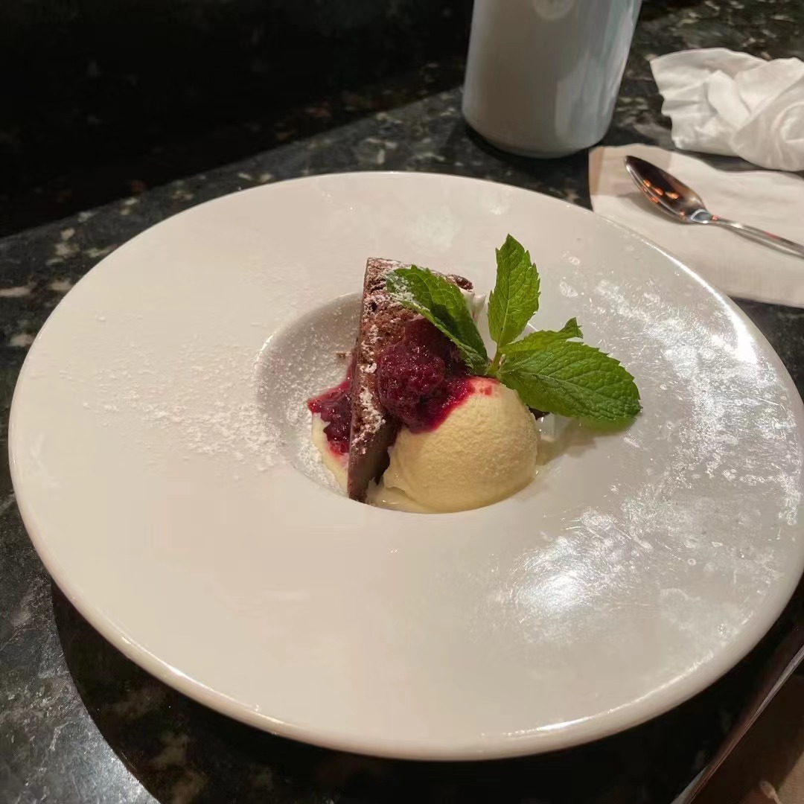
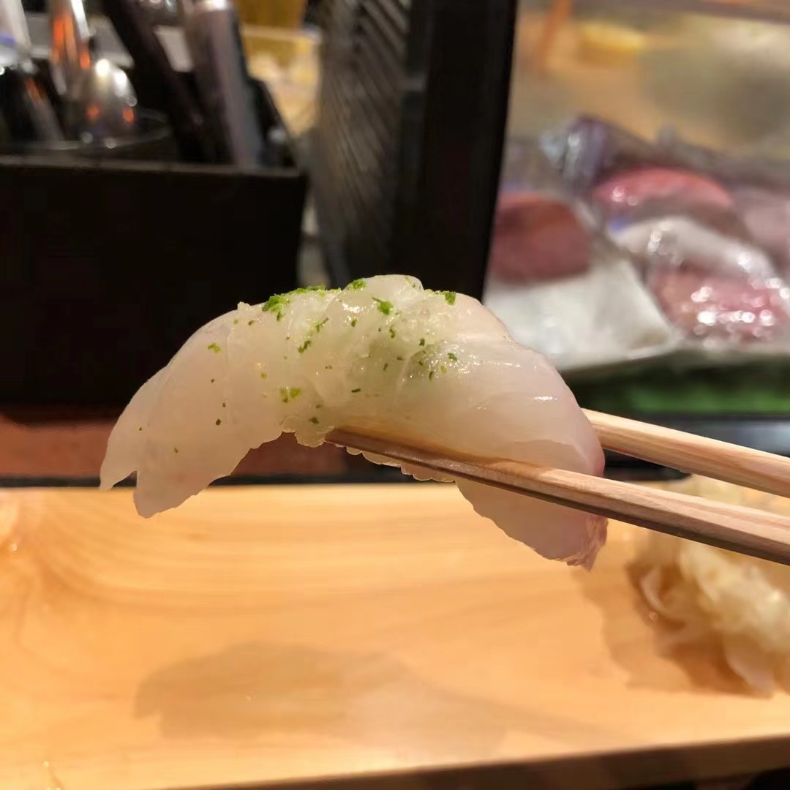
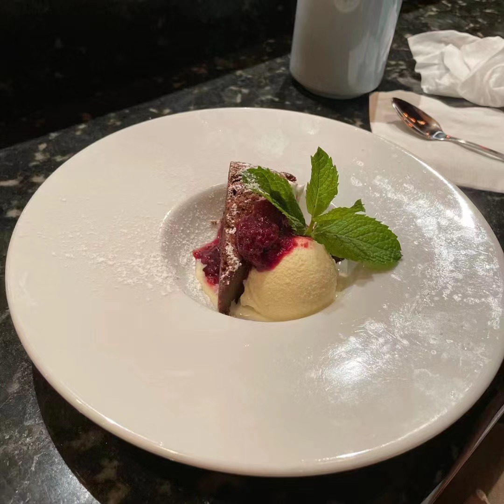
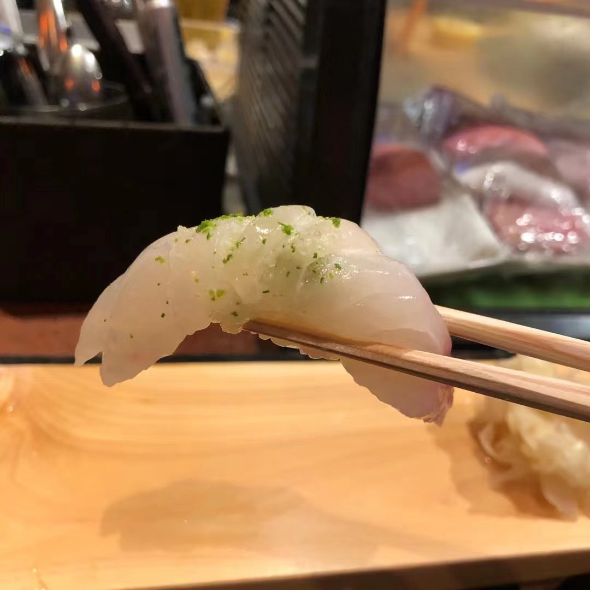

San Shi Go
I lived in Irvine before I moved to Ann Arbor this summer. During my time in California, I will say Omakase is my favorite fine dining.
I tried many Michelin guide chef's restaurant, and I'll say San Shi Go in Newport Beach is my favorite one in the Orange County though it is not in the list of Michelin Guide yet.
It is a very traditional Japanese restaurant, and their chef Markodo is so passionate that you can definitely feel how he loves sushi and his restaurant.
As I go their restaurant more and more often, the chef has already remembered what fish I will like and what kind of ingredients can give me surprise. I am really happy I enjoy my meals very time.
I love this place not only because its artistic foods but also the happy air here. We drink and chat with chefs together. Yea, I am quite miss this treasure place.
funny thing to share: last time I went to Sanshigo with my boyfriend. I was pretty full after finishing apetizers and 6 sushi courses. Chef Markodo seems found this my little secret, so he made the joke with me that "Are you full? Are you ready with the mini sushi next?"
I just said "yes!" Then the funniest thing happens! He really made a super cute sushi for me, which is only 10% size of the regular one. A little umai slept on that. Everything is made with heart. I am so happy with this surprise!